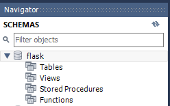
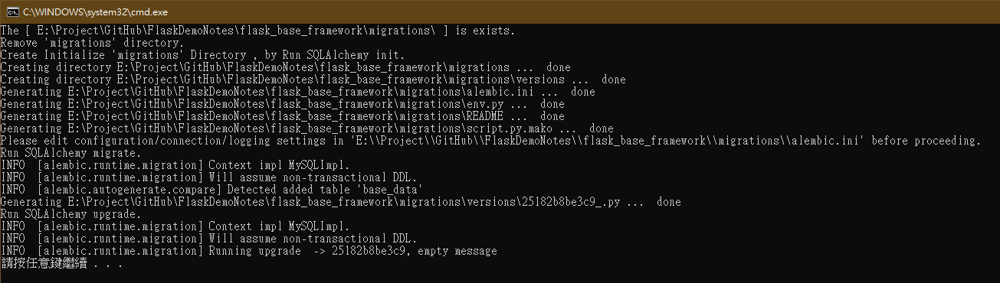
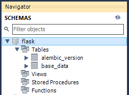
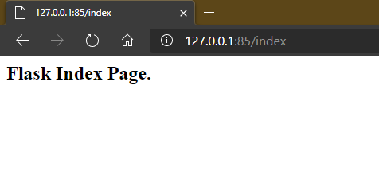

GitHub: https://github.com/s123600g/FlaskDemoNotes/
在Flask網站基礎框架上預設會有以下結構:
.
├── BaseData
│ ├── BaseData.py
│ ├── __init__.py
│
├── Config.py
├── DB_initialize.bat
├── DB_initialize.sh
├── Manage.py
├── Server.py
├── Startup.py
├── migrations
│ ├── README
│ ├── __pycache__
│ │ └── env.cpython-36.pyc
│ ├── alembic.ini
│ ├── env.py
│ ├── script.py.mako
│ └── versions
│ ├── 8c1ac1a960d2_.py
│ └── __pycache__
│ └── 8c1ac1a960d2_.cpython-36.pyc
├── static
│ ├── css
│ │ └── base.css
│ └── js
│ └── base.js
├── templates
│ └── index.html
├── uwsgi
│ └── uwsgi.log
└── uwsgi.ini
https://github.com/s123600g/FlaskDemoNotes/tree/master/flask_base_framework
建立完成後請記得在專案目錄內新增一個uwsgi目錄。
關於容器建置使用映像檔可參考
資料模型實體檔放置在 baseData/ 底下，實體檔為 BaseData.py。
範例資料庫使用MySQL，在進行資料模型初始化之前必須要先完成
flaskmyflask / myflask (user / password)Config.py內設定好資料庫連接參數
db_host為資料庫連接位址，因筆者使用Docker MySQL，在連接port上設置會跟預設3306不一樣。
關於Docker MySQL可參考 [https://hub.docker.com//mysql](https://hub.docker.com//mysql)
將DB_initialize.bat內部參數 DirPath
Set DirPath=E:\Project\GitHub\FlaskDemoNotes\flask_base_framework\
更改為專案放置位置資訊，在點擊執行即可。
執行前:

執行中:

執行後:

docker run --name flask_base_framework -p 85:80 -v E:\Project\GitHub\FlaskDemoNotes\flask_base_framework:/web/web_data -d nginx_flask_server
將參數 -v 內
E:\Project\GitHub\FlaskDemoNotes\flask_base_framework
換成讀者自己放置的位置即可。

重要整體參數配置都會設置在此檔案內，有運作模式、網站模板與靜態檔案目錄、資料庫連接字串、使用者自訂參數…等等。
配置檔內容需要包含下面三個重要類別:
除了上面三個重要類別之外，其餘開發者也可以在自行增加配置參數區塊。
靜態目錄與模板目錄位置
static_url_path = '/static'
static_folder = 'static'
template_folder = 'templates'
相關參考:
資料庫連接語法以MySQL為例
兩者類別是管理網站運作時，運行模式為開發或正式環境，Session Data加密金鑰設置。
各自都繼承上面BaseConfig類別，在網站啟動時選擇哪一種模式運行時，會自動加載我們在BaseConfig類別中基本設置。
這是給網站主體控制中心在初始化啟動時，選擇運作模式來源開關。
config = {
'developermentConfig': DevelopermentConfig,
'productionConfig': ProductionConfig,
'run_mode_dev':True
}
run_mode_dev 管控網站運作是否為開發模式，用在Flask初始化載入封裝模式選擇。
Startup.py為網站剛開始啟動時，會先初始化必要運作模組與參數配置載入，例如以下模組
都會在此做載入初始化本體動作，後面其他自訂模組要運用時，只要從Startup匯入該模組變數即可。
from Startup import app
建置一個app，後面許多控制模組都會用到此變數。
app = Flask(__name__)
載入網站運作模式(developermentConfig / productionConfig)
建置一個db，後面許多控制模組如果要調用資料庫都會用到此變數，在資料模型建立資料表時，也會用到此變數。
db = SQLAlchemy(app)
註冊資料模型
from BaseData.BaseData import Base_Data
如果要建立一個新的資料表時，透過在BaseData內建立好該資料表模型檔後，記得要來此註冊該模型這樣才會被建立起來，如果忘記這一步資料控制模組不會知道有新增一筆資料表模型，自然就不會在資料庫中建立該資料表。
Server.py為網站運作主要程式，包含了頁面控制項與路由導向處理。
匯入網站主要模組
從Startup匯入主要運作模組變數
from Startup import app, db
匯入建好的資料模型
from Model import Base_Data
在之後開發如果要在頁面控制項調用Base_Data資料表，必須要完成這一步驟才能進行。
頁面控制項配置
開發頁面控制項功能會搭一個路由導向配置
@app.route("自訂路由", methods=['自訂可接收Http Request Type'])
形成一個完整響應請求處理端，基本頁面網址會配置一個響應請求處理端。建立一個網址為 http:localhost:85/index 響應請求處理端頁面控制項範例。
範例中建置了一個網站位置為/index，並且可接收請求型態為GET。
更詳細說明內容可參考: https://flask.palletsprojects.com/en/1.1.x/api/#url-route-registrations
控制項
用Python建立功能函式形式，函式名稱可自訂並且最後會回傳一個Html模板，最後此模板會渲染成我們所看到的網站介面(View)。
Flask利用物件關聯對映(ORM)方式來進行資料處理，在此之前需要建立資料庫中每個資料表類別，在做資料查詢新增修改上，才能夠用物件形式來對資料表進行操作。
相關參考:
Flask-SQLAlchemy是Flask預設封裝基本SQLAlchemy使用模組，其內容功能都與SQLAlchemy ORM是一樣的，在Flask-SQLAlchemy官方說明也有提到SQLAlchemy ORM。
建置模型套件來源筆者使用SQLAlchemy ORM，在運作上都相容能夠使用。
在官方預設教學上，會看到是使用一個Model.py來放置資料表類別模型，如果在此筆記框架下，內容類似下方
雖然這樣是可以正常運行的操作資料，但是如果是很多個資料表的情況下，都建立在同一個Model.py裡面的話，對於日後維護和開發更動肯定會帶來不便。
在此筆記框架規劃是建立一個BaseData目錄，內容放置各資料表模型單獨程式檔案，例如有一個資料表叫做Base_Data，建立步驟如下
BaseData.py。BaseData.py內建立一個名為Base_Data類別。在建置資料表時，如果沒設置__tablename__的值就會依照類別名稱來命名，需要注意的是如果有設置__tablename__，英文必須為小寫不然migrate在MySQL部份操作會出問題。
__tablename__ = 'base_data'
用變數宣告建立方式來進行
欄位名稱 = Column(型態,屬性設定)
建立一個欄位BASE_ID，型態為整數，屬性為主鍵、自動遞增
BASE_ID = Column(Integer, primary_key=True, autoincrement=True)
建立一個欄位Base_Text，型態為文字，屬性為不可空值
Base_Text = Column(Text(), nullable=False)
建立一個欄位Base_Text2，型態為長度20字串，屬性為可空值
Base_Text2 = Column(String(20), nullable=True)
建立一個欄位Base_Num，型為整數，屬性為可空值
Base_Num = Column(Integer , nullable=True)
建立一個欄位InertDate，型態為日期時間，屬性為不可空值
InertDate = Column(DateTime(), nullable=False)
其餘更進階欄位設定請參考相關參考內容或在搜尋關鍵字去了解。
Flask也有一個動作腳本管理執行方式，透過Flask-Script套件我們可以開發一個動作管理器。
在這裡是建置一個更新資料庫動作，透過Flask-Migrate套件來完成更新修改資料表。
相關參考:
建立一個更新資料庫動作管理
主要程式行，增加一個可識別參數，並設置此參數對應處理的模組。
manager.add_command('db', MigrateCommand)
當執行Manage.py程式時，偵測到一個可識別參數為db，將此參數值給予Flask-Migrate底下模組MigrateCommand執行對應動作處理。
python manage.py db init
python manage.py db migrate
python manage.py db upgrade
可用來搭配下方 資料模型更新腳本 章節所使用腳本。
uWSGI是一種通信閘道介面應用程式，它是Web服務與後端應用程式之間橋梁，本身也可作為一個Web Server，但是在性能表現上兩者同時兼顧效果還是有限，這時候就有分工情形規劃，在Server配置上使用Nginx負責做Web服務器工作，uWSGI主要負責管理後端應用程序執行，接收Nginx處理好請求內容，分配給對應的後端程序執行完，再回傳結果給Nginx響應即可。
相關參考:
配置檔內容
網站根目錄設置
chdir=/web/web_data/
/web/web_data為容器內部位置，在執行容器服務時會將我們指定本機位置掛載在此位置底下，uwsgi.ini必須放在指定本機位置內跟著被掛載進來，否則無法進行運作。
在工作負載配置方面
設置一個主程序(master)，負責管理底下子程序(worker)
master=true
設置二個處理子程序(worker)
processes=2
每一個處理子程序各分配一個執行緒
threads=1
執行起來後可以在uwsgi/uwsgi.log看到以下訊息
*** uWSGI is running in multiple interpreter mode ***
spawned uWSGI master process (pid: 10)
spawned uWSGI worker 1 (pid: 11, cores: 1)
spawned uWSGI worker 2 (pid: 12, cores: 1)
在端口配置上建立一個管道檔案，讓Nginx能夠透過此檔案跟uWSGI進行對接
socket=/tmp/uwsgi.sock
執行起來後可以在容器內部/tmp底下看到uwsgi.sock檔案，在/tmp底下還會有uwsgi.status與uwsgi.pid兩個檔案，前者是負責記錄目前uWSGI運作狀態資訊，後者是紀錄目前uWSGI在系統程序上編號。
檔案有更動時自動重新加載
py-autoreload = 1
開發環境下可以設置為1代表開啟，如果在正式運作環境下請記得務必設置為0，否則不小心更動檔案會導致uWSGI偵測到檔案更動，重新加載檔案有可能會導致運作上發生錯誤。 執行成功紀錄:
*** Starting uWSGI 2.0.18 (64bit) on [Sun Jun 21 13:20:53 2020] ***
compiled with version: 8.3.0 on 19 June 2020 13:16:24
os: Linux-4.19.76-linuxkit #1 SMP Tue May 26 11:42:35 UTC 2020
nodename: 688513a0ed4d
machine: x86_64
clock source: unix
detected number of CPU cores: 2
current working directory: /
writing pidfile to /tmp/uwsgi.pid
detected binary path: /usr/local/bin/uwsgi
!!! no internal routing support, rebuild with pcre support !!!
uWSGI running as root, you can use --uid/--gid/--chroot options
*** WARNING: you are running uWSGI as root !!! (use the --uid flag) ***
chdir() to /web/web_data/
your memory page size is 4096 bytes
detected max file descriptor number: 1048576
lock engine: pthread robust mutexes
thunder lock: disabled (you can enable it with --thunder-lock)
uwsgi socket 0 bound to UNIX address /tmp/uwsgi.sock fd 3
uWSGI running as root, you can use --uid/--gid/--chroot options
*** WARNING: you are running uWSGI as root !!! (use the --uid flag) ***
Python version: 3.7.3 (default, Dec 20 2019, 18:57:59) [GCC 8.3.0]
Python main interpreter initialized at 0x5570facf8cc0
uWSGI running as root, you can use --uid/--gid/--chroot options
*** WARNING: you are running uWSGI as root !!! (use the --uid flag) ***
python threads support enabled
your server socket listen backlog is limited to 100 connections
your mercy for graceful operations on workers is 60 seconds
mapped 218712 bytes (213 KB) for 2 cores
*** Operational MODE: preforking ***
WSGI app 0 (mountpoint='') ready in 0 seconds on interpreter 0x5570facf8cc0 pid: 10 (default app)
uWSGI running as root, you can use --uid/--gid/--chroot options
*** WARNING: you are running uWSGI as root !!! (use the --uid flag) ***
*** uWSGI is running in multiple interpreter mode ***
spawned uWSGI master process (pid: 10)
spawned uWSGI worker 1 (pid: 11, cores: 1)
spawned uWSGI worker 2 (pid: 12, cores: 1)
Python auto-reloader enabled
*** Stats server enabled on /tmp/uwsgi.status fd: 11 ***
[pid: 12|app: 0|req: 1/1] 172.17.0.1 () {52 vars in 1871 bytes} [Sun Jun 21 13:21:08 2020] GET /index => generated 94 bytes in 21 msecs (HTTP/1.1 200) 2 headers in 79 bytes (1 switches on core 0)
[pid: 11|app: 0|req: 1/2] 172.17.0.1 () {50 vars in 1782 bytes} [Sun Jun 21 13:21:09 2020] GET /favicon.ico => generated 16 bytes in 2 msecs (HTTP/1.1 404) 2 headers in 86 bytes (1 switches on core 0)
[pid: 12|app: 0|req: 2/3] 172.17.0.1 () {50 vars in 1559 bytes} [Sun Jun 21 13:23:01 2020] GET /index => generated 94 bytes in 1 msecs (HTTP/1.1 200) 2 headers in 79 bytes (1 switches on core 0)
[pid: 12|app: 0|req: 3/4] 172.17.0.1 () {50 vars in 1495 bytes} [Sun Jun 21 13:23:02 2020] GET /favicon.ico => generated 16 bytes in 1 msecs (HTTP/1.1 404) 2 headers in 86 bytes (1 switches on core 0)
靜態檔案目(static/)
此目錄底下放置著css、js基本檔案之外，開發者可以自行決定要如何規劃放置什麼檔案。
HTML與模板目錄(templates/)
此目錄底下放置html檔案，筆者使用Jinja2模板語言進行html開發。
腳本有分為兩種，一種是對應Windows，另一種是對應Linux，但實際工作內容不變，執行上面執行命令控管-更新資料庫動作內容。
Windows → DB_initialize.bat
使用前請務必修改 DirectoryName 內容，此為網站跟目錄位置。
Set DirPath=你的網站跟目錄位置
需要注意等號(=)前是不能有空格的，要連在一起否則執行會出錯。
Linux → DB_initialize.sh